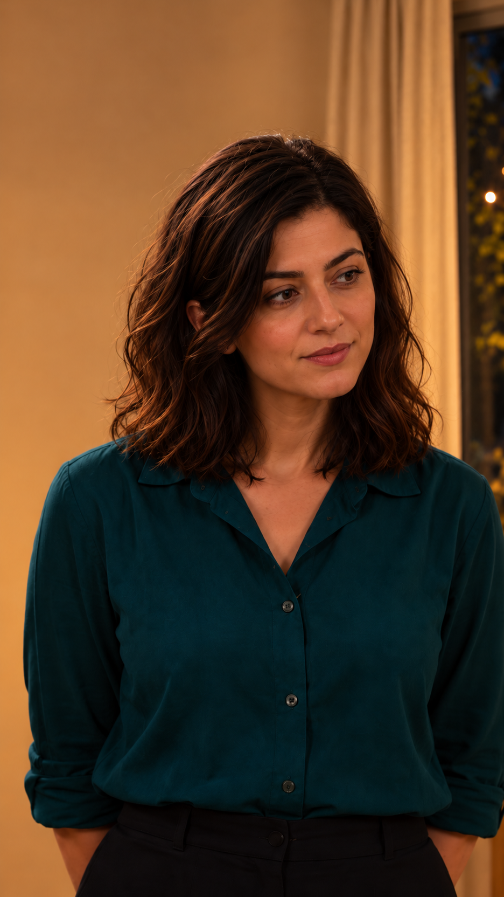
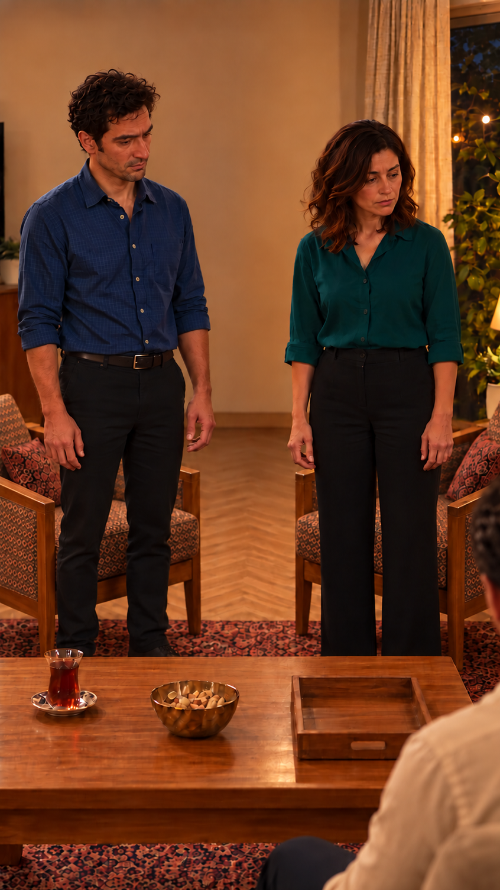
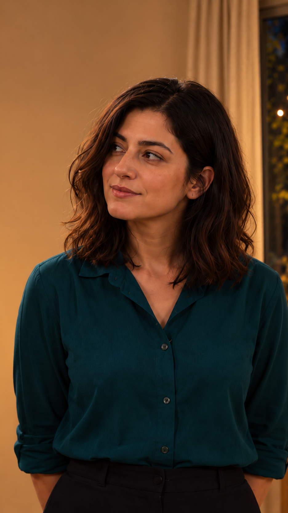
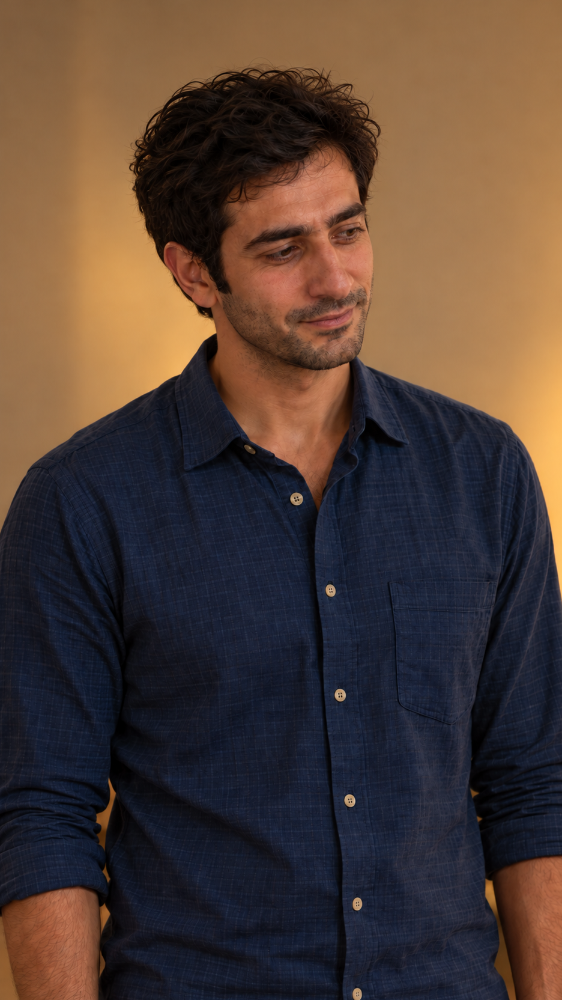
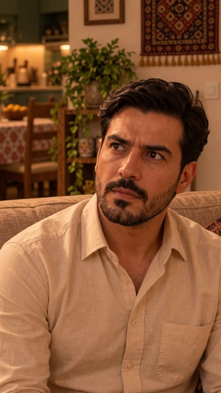
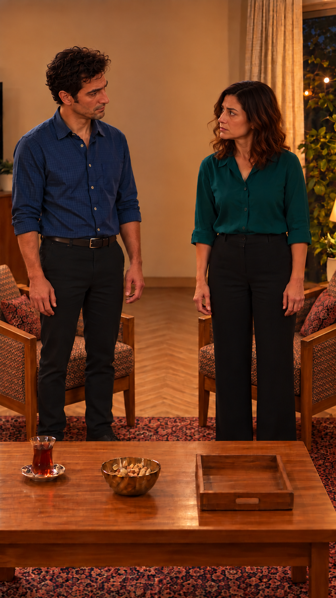
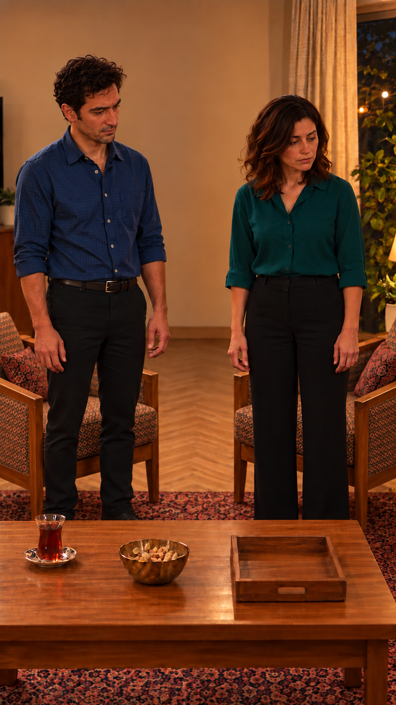

قالب دقیق عکسهای قسمت پنج
همهٔ عکسها برش دقیق۹:۱۶دارند؛ هیچ تصویری کشیده یا بزرگ نشده است. در نماهای باز فقط بخش اضافهٔ کف پایین تصویر کوتاه شده؛ سرها، بدنها، پاها و میز در قاب باقیاند. فایلهای اصلی حفظ شدهاند. این صفحه عکس ثابت است و تولید ویدیو یا مجوز ارسال نیست.
بستهٔ تولید و موارد باز · ابعاد، برش و اثرانگشتها

نازلی؛ پاسخ
936 × 1664 · ۹:۱۶ دقیق
سامان؛ خاطره
846 × 1504 · ۹:۱۶ دقیق
نازلی؛ شوخی
936 × 1664 · ۹:۱۶ دقیق
سامان؛ جواب
936 × 1664 · ۹:۱۶ دقیق مادر؛ پرسش
مادر؛ پرسش
936 × 1664 · ۹:۱۶ دقیق فرهاد؛ آغاز نشسته
فرهاد؛ آغاز نشسته
936 × 1664 · ۹:۱۶ دقیق مادر؛ بدرقه
مادر؛ بدرقه
936 × 1664 · ۹:۱۶ دقیق
سؤال بازیافتی
360 × 640 · ۹:۱۶ دقیقسامان؛ پاسخ به مادر
936 × 1664 · ۹:۱۶ دقیق
پایان؛ نگاه متقابل
846 × 1504 · ۹:۱۶ دقیق
پایان؛ نگاه به مادر
846 × 1504 · ۹:۱۶ دقیق فرهاد؛ مرجع لحظهٔ قطع
فرهاد؛ مرجع لحظهٔ قطع
936 × 1664 · ۹:۱۶ دقیق